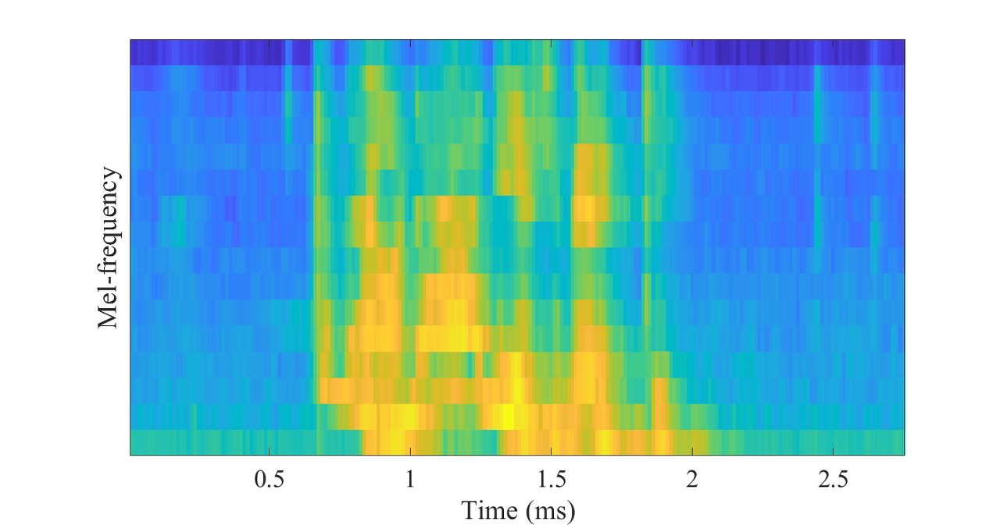

지적활동(知的活動)

(소리의 특징(주파수,파형)을 이미지로 나타낸 멜 스펙트로그램)
지적활동
오디오처리를 공부하는 중입니다.
오디오 처리에 쓰이는 신경망을 공부하고 있습니다(CNN,LSTM 등..)
딥러닝 유명 논문들의 모델들을 구현하며 공부중입니다.
딥러닝 컴퓨터를 마련하기 위해 자금조달중입니다..
나의 노력
딥러닝 컴퓨터를 마련하기 위해 자금조달중입니다..
후원 계좌: 국민은행 795302-04-164-583 (예금주:김동우)